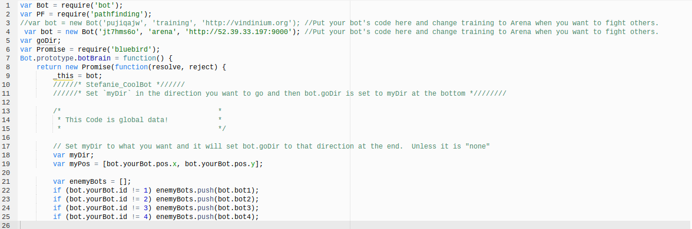
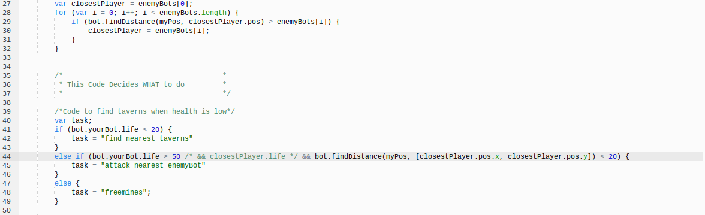
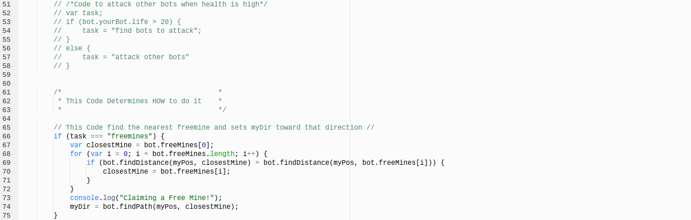
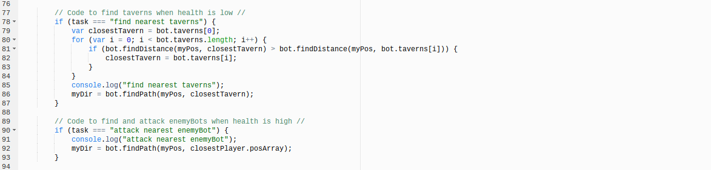
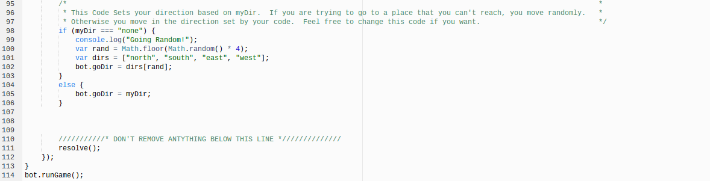
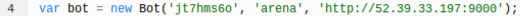
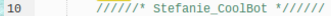
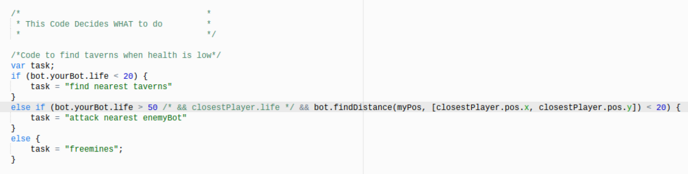
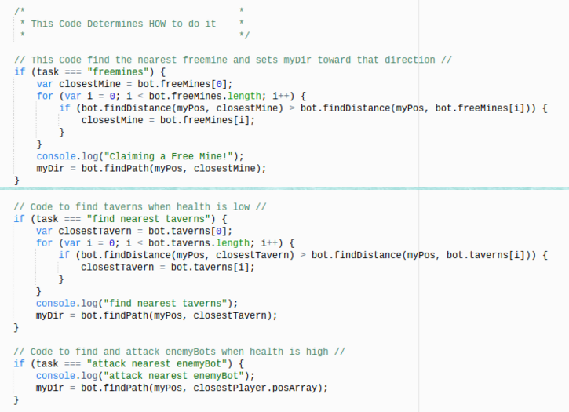

Breaking Down The Coding
Setting Up My Bot
The first step I took into creating my bot for the vindinium was by going to vindinium.org. I clicked on "Create New Bot" and I named my bot using my first name and an adjective to describe the bot. After submitting the name (Stefanie_CoolBot) and getting registered, I was given a secret key that I would keep to myself. I put the name of my bot in line 10 as a comment and the key in line 4 as a variable: var bot.


Code That Describes WHAT My Bot Should Do
Once I got my bot ready, I made a code that described exactly what I want my bot to do. I needed my bot to find taverns, freemines, and to attack, so I made a variable and conditional statements to describe when I wanted my bot to do these things. I began by making a variable and named it "var task" and defined in an if statement that I wanted my bot to search for the taverns whenever my bot had a health of lower than 20. Going to the taverns, would help my bot to regain health. I coded it as "if (bot.yourBot.life < 20)". Below that I defined the task as "find nearest taverns". Then, I made an else if statement to say that if my bot's life had a health of greater than 50, it would attack the closest player. I also had my bot find the distance to the nearest enemyBot with a low health of below 20. I coded the "attack nearest enemyBot" and "bot.findDistance" with less than 20 health functions together in the same else if statement like this: else if (bot.yourBot.life > 50 /* && closestPlayer.life */ && bot.findDistance(myPos, [closestPlayer.pos.x, closestPlayer.pos.y]) < 20). I made another task below that statement and set it equal to "attack nearest enemyBot". Afterwards, I made one last statement, an else statement, that defined in a task that if the health was between 20 and 50, that my bot would search for freemines. Freemines would be the other option in case there were no free mines. Above the variable and conditional statements for what my bot would do, I added a comment that helped me as a reminder of what and when the coding was supposed to be used.

Code That Describes HOW My Bot Should Function
After I made the code to describe what I want, I made sure that it happened by making more codes. So my bot could be able to find freemines, the nearest free taverns, and enemyBots to attack, I made more conditional statements, variables, for loops, console.logs, and myDirs. The first conditionsal statement I made was for finding freemines. I created the if statement like this: if (task === "freemines"). This defines that when the task is "freemines", it's true and my bot will search for them. On the next line, I made a variable named "var closestMine" and set it equal to "bot.freeMines [0}". This will have my bot find the closest mine of them all. Then, I made a for loop. For loops are used when wanting to make a loop, which repeat the same code block until a condition is identified as either true or false. This is the for loop I used: for (var i = 0; i < bot.freeMines.length; i++). The "var i = 0" is the first statement in the loop. It is completed before the loop has begun. The second statement in the loop defines the condition for running it. This is the second statement in the for loop: i < bot.freeMines.length. The final statement in the loop, "i++", is completed each time after the code block has been completed. In the following line, there is another if statement that tells my bot that in order to find the nearest freemine, it needs to calculate the distance from every mine, and figure out which is the closest. The coding that I used for this if statement is defined like this: if (bot.findDistance(myPos, closestMine) > bot.findDistance(myPos, bot.freeMines[i])). Below it, I added "closestMine = bot.freeMines[i]". This searches for the closest mine. Afterwards, I made a console.log. A console.log is a "method that allows a script to log in data to the Javascript". I made a console.log using the function I wanted my bot to complete. It looked like this: console.log("Claiming a Free Mine!"). The last main coding I did for how to find the nearest freemine was by making a myDir. The myDir is the direction where I want my bot to travel. Using bot.findPath, my bot would be able to find the path to the nearest freemine. I coded the myDir like this: myDir = bot.findPath(myPos, closestMine). To finish off coding the "how" of the freemine, I added a comment above the coding saying that the code finds the nearest freemine and it sets myDir in that direction. I repeated all these steps twice, changing the "freemine" to "taverns" for finding the nearest free tavern and "attack nearest enemyBot" for when wanting my bot to attack and defeat the nearest enemyBot with low health. The only other thing I changed besides the key words for each different funtion was the myDir for "attack nearest enemyBot". Instead of having the myDir as "myDir = bot.findPath(myPos, closestPlayer)", I added .posArray to it at the end like this: myDir = bot.findPath(myPos, closestPlayer.posArray). I did this so I could have the x and y coordinates of the closest enemyBot. This is how I made my bot do specific functions.

Why I Chose These Functions
I decided to make my bot altogether be able to the find the nearest taverns, nearest freemines, and be able to attack the nearest enemyBots, including finding the distance to the closest one with a health of less than 20. One of the biggest functions I needed my bot to have was to be able to find the nearest taverns because if my bot could find and claim taverns, then it would be able to regain any health that it lost from other enemyBots. By retrieving health, the better chance my bot would have at getting to attack enemyBots and gain more gold, which could lead to winning. The ability to find freemines is also a function my bot needs because in the situation of not being able to attack enemyBots, find available taverns, and having low health, finding freemines can be the only way in getting more health and eventually more gold. Another really important function for my bot is being able to attack enemyBots. Being able to fight other bots would allow my bot to get more taverns, mines, and gold. Finding the distance from my bot to the nearest enemyBot with less than 20 health is easier with the "bot.findDistance" function, so I used it to help my bot. This is why I chose these functions for my bot.
AI Reflection
After coding my bot, it was always able to do everything I wanted it to do. When my bot had health less than 20, it search for taverns. When my bot had a health of more than 50, it searched for the nearest enemyBot to attack. When my bot had any health between 20 and 50, it searched for freemines. Overall, the coding I need in order to make my bot function this way was somewhat confusing and complicated for me to do. I was still having trouble understanding the purpose and how to use conditional statements, which were a very essencial part in making my bot work the way it does. My understanding and opinion has changed of AI from writing my own because now I better understand how to use and form different conditional statements. I now feel more comfortable and that I may be able to succed in creating conditional statements.